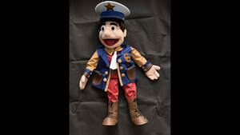

Trade Mark Journal No.2025/034 22 August 2025
UK00004247962 12 August 2025 (16,18,28,35,36,41)

- Class 16
- Stationery; Envelopes [stationery]; Paper stationery; Printed stationery; Stickers [stationery]; Office stationery; Stencils [stationery]; Wrappers [stationery]; Stationery boxes; Binders [stationery]; Folders [stationery]; Stationery folders; Office paper stationery; Writing stationery; Scented stationery; Adhesives for stationery; Paper folders [stationery]; Pads [stationery]; Transparencies [stationery]; Thumbtacks [stationery]; Party stationery; Pencil ornaments [stationery]; Pencil ornaments (stationery); Files [stationery]; Envelopes for stationery use; Protractors [for stationery and office use]; School supplies [stationery]; Copying paper [stationery]; Seals [stationery]; Covers [stationery]; Stationery and educational supplies; Paper sheets [stationery]; Marking pens [stationery]; Pins [stationery]; Pocket books [stationery]; Announcement cards [stationery]; Clips for paper [stationery]; Manifolds [stationery]; Cases for stationery; Stationery cases; Index cards [stationery]; Glitter pens for stationery purposes; Stationery (Cabinets for -) [office requisites]; Cabinets for stationery [office requisites]; Document holders [stationery]; Glitter for stationery purposes; Adhesives for stationery purposes; Glue pens for stationery purposes; Writing cases [stationery]; Desktop cabinets for stationery [office requisites]; Adhesive pads [stationery]; Self-adhesive tapes for stationery and household purposes; Self-adhesive tapes for stationery or household purposes; Tapes (adhesive -) [stationery]; Adhesives for stationery or household purposes; Adhesive foils stationery; Felt mats for Chinese calligraphy (stationery); Plantable seed paper [stationery]; Marking inks for stationery purposes; Document files [stationery]; Pastes for stationery or household purposes; Organizers for stationery use; Label printing machines for household and stationery use; Self-adhesive tapes for stationery use; Glue for stationery or household purposes; Document holders being articles of stationery; Adhesives for stationery or household use; Adhesives for stationery and household use; Gummed tape [stationery]; Adhesive tapes for stationery or household purposes; Paste for stationery or household purposes; Gummed cloth for stationery purposes; Adhesive tapes for stationery purposes; Rubber bands [stationery]; Pastes and other adhesives for stationery or household purposes; Seaweed glue for stationery; Plastic adhesives for stationery or household purposes; Gelatine glue for stationery or household purposes; Rubber cements for stationery; Notepads; Glue for stationery or household use; Gums [adhesives] for stationery or household purposes; Isinglass for stationery or household purposes; Gluten [glue] for stationery or household purposes; Adhesive bands for stationery purposes; Gum arabic glue for stationery or household purposes; Spirit gum for stationery purposes; Latex glue for stationery or household purposes; Paper embossers [office requisites]; Glitter glue for stationery purposes; Notepaper; Letterhead paper; Letterheads; Adhesive tape for stationery purposes; File pockets for stationery use; Adhesives [glues] for stationery or household purposes; Adhesive tape cutters being stationery; Starch paste for stationery; Paper envelopes for packaging; Wood pulp board [stationery]; Automatic paper clip dispensing machines for office or stationery use; Adhesive tape dispensers for household or stationery use; Printed paper invitations; Stapling guns (Electric -) for stationery use; Reinforced stationery tabs; Paper; Newsprint paper; Stencil paper [mimeograph paper]; Paper stock [printing paper]; Paper and cardboard; Kraft paper; Parchment paper; Vellum paper; Tissue paper for making stencil paper; Napkin paper; Paraffined paper [waxed paper]; Notebook paper; Greaseproof paper; Photocopy paper; Paper napkins; Napkins of paper; Toilet paper; Glassine paper; Printing paper; Stencil paper; Tissue paper for use as material of stencil paper (ganpishi); Paper towels; Towels of paper; Paper doilies; Mimeograph paper; Crepe paper; Cloth paper; Carbonless paper; Publication paper; Envelope paper; Blotting paper; Typewriter paper; Tissue paper; Paper for photocopies; Wrapping paper; Corrugated paper; Serviettes of paper; Paper serviettes; Laminated paper; Writing paper; Paper made from paper mulberry (tengujosi); Binder paper; Paper ribbon; Postcard paper; Recycled paper; Letter paper; Xerographic paper; Paper made from paper mulberry (kohzo-gami); Paper handtowels; Paper staplers; Staplers for paper; Manila paper; Paper tablecloths; Tablecloths of paper; Calligraphy paper; Tracing paper; Giftwrapping paper; Paper bags; Bags of paper; Paper ribbons; Ribbons (Paper -); Ribbons of paper; Magazine paper; Wax paper; Graph paper; Rice paper; Gummed paper; Waxed paper; Paper (Waxed -); Calendered paper; Paper for photocopying; Paper hand-towels; Paper boxes; Boxes of paper; Paper handkerchiefs; Handkerchiefs of paper; Drawing paper; Gift-wrapping paper; Coated paper; Supercalendered printing paper; Paper tapes; Absorbent paper; Paper garlands; Tablemats of paper; Craft paper; Note paper; Paper lace; Ivory paper; Paper bunting; Bunting [paper]; Bunting of paper; Paper board; Adhesive paper; Oiled paper for paper umbrellas (kasa-gami); Book-cover paper; Art paper; Pads of paper; Paper pads; Paper washcloths; Proofing paper; Paper cuttings; Paper tissues; Tissues of paper; Mulch paper; Paper patterns; Bulk paper; Labels of paper; Paper labels; Paper book markers; Masking paper; Paper for wrapping books; Carbon paper; Paper clips; Baking paper; Honeycomb paper; Semi-processed paper; Placards of paper; Rosettes of paper; Lavatory paper; Grocery paper; Paper hangtags; Paper cutters; Packing paper; Score-books; Printers' reglets; Score-cards; Hectographs; Billbooks; Oleographs; Books in the fields of games and gaming; Rule books for playing games; Magazines in the fields of games and gaming; Newsletters in the fields of games and gaming; Trading cards other than for games; Trading cards, other than for games; Strategy guidebooks for video games; Plastic bags for packing; Freezer bags; Paper bags and sacks; Paper for bags and sacks; Rubbish bags; Plastic shopping bags; Gift bags; Sandwich bags; Carrier bags; Garbage bags of plastic; Dustbin bags; Plastic bags for wrapping; Plastic bags for packaging; Plastic sandwich bags; Paper shopping bags; Paper bags for packaging; Packaging bags of paper; Shopping bags of paper or plastic; Padded bags of paper; Paper lunch bags; Activity books; Sticker activity books; Children's activity books; Printed teaching activity guides; Dye-sublimation print paper; Print letters; Laser print paper; Print blocks; Print characters; Print wheels; Prints; Digital printing paper; Printed publications; Publications (Printed -); Graphic prints; Printed paper labels; Lithographic prints; Giclee prints; Photographic printing paper; Paper for printing photographs; Photo prints; Printed books; Canvas prints; Printed art reproductions; Printed coupons; Printed flyers; Offset printing paper for pamphlets; Printing fonts; Cartoon prints; Printed periodicals; Printed paper signs; Silk screen prints; Annuals [printed publications]; Printed brochures; Photographic prints; Printed booklets; Printed calendars; Printed advertisements; Color prints; Printed advertising boards of paper; Printed patterns; Pictorial prints; Photographs [printed]; Printed photographs; Laser printing paper; Printed newsletters; Ink sheets for use in reproducing images in the printing industry; Art prints; Printing papers; Printed invitations; Graphic art prints; Forms, printed; Printed forms; Printed periodical publications; Printed music; Printed packaging materials of paper; Printed cartoon strips; Fine art prints; Printed programmes; Printed pamphlets; Printed tickets; Prints [engravings]; Engravings [prints]; Reel paper for printers; Printed menus; Printed horoscopes; Periodical publications; Periodical magazines; Advertising publications; Promotional publications; Photo albums; Mini photo albums; Photograph albums; Picture postcards; Pictures; Photograph album pages; Brag books [photo albums]; Picture cards; Photograph mounts; Photographs; Photo storage boxes; Watercolor pictures; Photo mounting corners; Coloring pictures; Photograph corners; Postcards and picture postcards; Photo albums and collectors' albums; Colouring pictures; Paper picture mounts; Picture books; Art pictures; Cardboard picture mounts; Prints in the nature of pictures; Picture framing mat boards; Mounts of paper for pictures; Signed photographs; Photographic albums; Paintings [pictures], framed or unframed; School photographs; Cling film; Film pens; Plastic film for packaging; Seaweed-based film for wrapping; Decoration and art materials and media; Wallpaper sample book; Training manuals; School cones, empty; Paper party bags; School yearbooks; Paper gift bags; Sandwich bags [paper]; Carrier bags of paper or plastic; Garbage bags of paper [for household use]; Paint boxes [articles for use in school]; Food bag tape for freezer use; Padded bags of card; Paper wine gift bags; Refuse bags of paper; Figurines made from cardboard; Sculptures made from papier mache; Binders (office supplies); Binders [office supplies]; School writing books; Paint boxes for use in schools; Educational equipment.
- Class 18
- Head-stalls; Pouchettes; Briefbags; Bridoons; Notecases; Saddletrees; Key-cases; Bags; Tote bags; Luggage bags; Duffle bags; Duffel bags; Carry-on bags; Toiletry bags; Bags for clothes; Drawstring bags; Carry-all bags; Belt bags and hip bags; Nose bags [feed bags]; Bags (Nose -) [feed bags]; Carrying bags; Grocery tote bags; Cross-body bags; Bags for umbrellas; Luggage, bags, wallets and other carriers; Diaper bags; Crossbody bags; Cloth bags; Bucket bags; Leather bags; Sling bags; Nappy bags; Canvas bags; Duffel bags for travel; Belt bags; Shoe bags; Clutch bags; Wheeled bags; Kit bags; Messenger bags; Souvenir bags; Travel bags; Bags for travel; Garment bags; Leather bags and wallets; Toilet bags; Shoulder bags; Make-up bags; Cosmetic bags; Waterproof bags; Reusable shopping bags; Makeup bags; Umbrella bags; Camping bags; Towelling bags; Courier bags; Bags for campers; Roll bags; Bags for carrying pets; Gym bags; Knitted bags; Bags [envelopes, pouches] of leather, for packaging; Bags [envelopes, pouches] for packaging of leather; Bags [envelopes, pouches] of leather for packaging; Attaché bags; Hand bags; Travelling bags; Cabin bags; Flight bags; Traveling bags; Overnight bags; Beach bags; Bags for climbers; Boot bags; Mesh shopping bags; Mesh bags for shopping; Leather shopping bags; Canvas shopping bags; Bum bags; Hiking bags; Knitting bags; Frames for bags [structural parts of bags]; Roller bags; Nose bags; Suit bags; Wash bags for carrying toiletries; Hunting bags; Baby carrying bags; Feed bags; Gladstone bags; Bags for school; School bags; School book bags; School backpacks; Satchels (School -); School satchels; School knapsacks; Athletics bags; Athletic bags; Sports bags; Bags for sports; String bags for shopping; Sport bags; Randsels [Japanese school satchels]; Shoe bags for travel; Game bags; Evening bags; Book bags; Work bags; Textile shopping bags; Wheeled shopping bags; Bags for sports clothing; Weekend bags; Music bags; General purpose sport trolley bags; Net bags for shopping; Bags (Net -) for shopping; Grips for holding shopping bags; All-purpose sports bags; Garment bags for travel; Bags (Garment -) for travel; All-purpose athletic bags; Costumes for animals; Fly masks for animals.
- Class 28
- Paper dolls; Paper airplanes; Battledores (hagoita); Punchbags; Bob-sleighs; Educational games; Parafoils; Sportballs; Punchballs; Toys; Toys, games, and playthings; Toys and playthings for pets; Ride-on toys; Cuddly toys; Puzzles [toys]; Toys for sandpits; Plush toys; Stuffed toys; Inflatable toys; Noisemakers [toys]; Toys for babies; Toys for pets; Wind-up toys; Fidget toys; Toys for use in perambulators; Radio-controlled toys; Plastic toys; Scooters [toys]; Crib toys; Toys for animals; Mobiles [toys]; Toys, games and playthings for pet animals; Pet toys; Windup toys; Rattles [toys]; Toys for cats; Toys for infants; Model cars [toys or playthings]; Wooden toys; Toys and playthings for pet animals; Toys for dogs; Toy dolls; Bendable toys; Educational toys; Models being toys; Toy playsets; Outdoor toys; Bath toys; Dog toys; Infant toys; Sandbox toys; Electronic toys; Bathtub toys; Action figures [toys or playthings]; Whistles [toys]; Sand toys; Inflatable ride-on toys; Controllers for toys; Soft toys; Miniature car models [toys or playthings]; Drones [toys]; Bouncing toys; Cloth toys; Tricycles for infants [toys]; Musical toys; Toy figurines; Play mats for use with toy vehicles [playthings]; Toy furniture; Mechanical toys; Wheeled toys; Toys for birds; Clockwork toys; Crib mobiles [toys]; Developmental toys; Fluffy toys; Plastic toys for use in the bath; Stuffed animals [toys]; Rocking toys; Inflatable bath toys; Stacking toys; Modular toys; Fabric toys; Plastic models being toys; Water toys; Model toys; Whack-a-mole toys for pets; Play mats incorporating infant toys [playthings]; Drawing toys; Toy prams; Action toys; Battery-operated action toys; Stuffed and plush toys; Stuffed plush toys; Plush stuffed toys; Sketching toys; Children's toys; Squeezable squeaking toys; Toy bicycles; Plastic character toys; Smart toys; Toy tableware; Whistling toys; Push toys; Clockwork toys [of plastics]; Construction toys; Articles of clothing for toys; Toy wheelbarrows; Squeeze toys; Talking toys; Toy bakeware and toy cookware; Bendy balls being toys; Toy mobiles; Toy xylophones; Clothing for toy figures; Stuffed bean-filled toys; Chewing toys for parrots; Toy animals; Pull toys; Toy cars; Assembly toys; Toy strollers; Water-squirting toys; Toy balloons; Toys for pet animals; Toy scooters; Toy hats; Intelligent toys; Toy cookware; Punching toys; Music box toys; Toy harmonicas; Smart plush toys; Toy automobiles; Toy robots; Toy tools; Toy weapons; Toys in the form of puzzles; Xylophones being musical toys; Novelty toys for parties; Toy glockenspiels; Soft sculpture toys; Inflatable pool toys; Costumes being childrens playthings; Puzzle mats [toys]; Toy bakeware; Money guns being toys; Toy pushchairs; Toy balls; Toy airplanes; Toy vehicles; Playthings; Games; Pinball games; Sports games; Chess games; Hockey games; Cards [games]; Checkers [games]; Checkers games; Table-top games; Coin-operated games; Low-friction game tables for playing hockey games; Marbles for games; Games (Marbles for -); Miniatures for use in games; Balls for playing games; Dice games; Balls for games; Games (Balls for -); Bowls [games]; Draughts [games]; Marbles for playing games; Skittles [games]; Joysticks for video games; Parlor games; Tabletop basketball games; Boards games; Board games; Parlour games; Hand-held consoles for playing video games; Card games; Game consoles; Quiz games; Bats for games; Dart games; Party games; Memory games; Musical games; Game boards for trading card games; Electronic games; Tabletop games and gambling devices; Interactive gaming chairs for video games; Go games; Gloves for games; Boule games; Games (Apparatus for -); Apparatus for games; Building games; Video game consoles; Counters for games; Arcade basketball shooting games; Balls for playing boules games; Compendiums of board games; Mechanical games; Manipulative games; Role playing games; Horseshoe games; Video game apparatus, arcade games, and amusement machines ; Role play games; Hand-held pinball games; Pinball games machines [toys]; Trading cards for games; Scratch cards for playing lottery games; Controllers for computer games; Target games; Handheld computer games; Ring games; Hand held units for playing video games; Miniatures for use in war games; Bingo game playing equipment; Computer game consoles; Chinese chess as games; Models for use with war games; Playing cards and card games; Game cards; Video game joysticks; Controllers for game consoles; Handheld game consoles; Markers [counters] for playing games; Nets for ball games; Trading card games; Skill and action games; Action skill games; Bats for ball games; Models for use with role playing games; Bowls bags; Bag stands for golf bags; Punching bags; Bags for skateboards; Golf bags; Bags for fishing; Toy cameras [not capable of taking a photograph]; Strength training apparatus; Golf training aids; Resistance parachutes for athletic training; Sports training apparatus; Golf bag trolleys; Golf bag carts; Golf bag tags; Bag toss games; Bean bag dolls; Bowling bags; Golf bag tags of leather; Golf club bags; Lacrosse ball bags; Trolley bags for golf equipment; Ski bags; Cricket bags; Soccer ball bags; Puppets; Stuffed puppets; Finger puppets; Hand puppets; Marionettes; Masks [playthings]; Masks (Toy -); Toy masks; Animal replicas as playthings; Stuffed dolls; Costumes being children's playthings; Doll costumes; Face masks being playthings; Toy musical instruments; Jack-in-the-boxes; Toy trick noisemakers; Dolls; Toy human characters; Hand clappers [noisemaker toys]; Plush dolls; Toy musical boxes; Stuffed toy animals; Theatrical masks; Masks (Theatrical -); Imitation bones being toys for dogs; Toy musical boxes [play articles]; Playsets for dolls; Dolls for playing; Costume masks; Rubber character toys; Beanbags in the form of playthings; Mascot dolls; Masquerade masks; Carnival masks; Matryoshka dolls; Matryoshka dolls [wooden nested Russian dolls]; Bouncers [playthings]; Sandboxes [playthings]; Rag dolls; Sleighs [playthings]; Hand throwing foam airplanes being toys; Toy and novelty face masks; Toy glow stick bracelets for parties; Toy swords; Tricycles for children for use as playthings; Radio-controlled toy robots; Toy knitting machines; Transforming robotic toys; Slides [playthings]; Toy hand tools; Imitation toilet articles being toys; Buckets [playthings]; Rattles [playthings]; Kokeshi dolls; Toys made of rubber; Wind-up walking toys; Bobble-head dolls; Soft sculpture plush toys; Toy foam hands; Stuffed toy bears; Toy pinwheels; Porcelain dolls; Manipulative puzzles.
- Class 35
- Retail services in relation to stationery supplies; Wholesale services in relation to stationery supplies; Retail services connected with stationery; Reproduction of files [paper]; Wage-packets (Preparation of -); Career advisory services (other than education and training advice); Retail services in relation to toys; Promoting services for baseball game; Wholesale services in relation to bags; Distribution of printed advertising matter; Publication of advertising literature; Publicity texts (Publication of -); Texts (Publication of publicity -); Publication of publicity texts; Publication of publicity material; Publication of advertising texts; Publication of publicity materials; Publication of publicity materials on-line; Publicity publication services; Publication of advertising matter; Publication of publicity materials and texts; Publication of printed matter for advertising purposes; Advertising text publication services; Compilation of directories for publication on the internet; Electronic publication of printed matter for advertising purposes; Preparation of publicity publications; Publication of printed matter for advertising purposes in electronic form; Advertising for motion picture films; Film directing of advertising films; Cinematographic film advertising; Production of advertising films; Media relations services; Advertising via electronic media and specifically the internet; Presentation of companies on the Internet and other media; Providing marketing consulting in the field of social media; Organisation of promotions using audiovisual media; Providing business information in the field of social media; Organisation of promotions using audio-visual media; Sales promotion using audiovisual media; Promotional marketing services using audiovisual media; Advertising and marketing services provided by means of social media; Media buying services; Rental of advertising time on communication media; Provision of advertising space on electronic media; Market research services relating to broadcast media; Arranging subscriptions to information media; Advertising in the popular and professional press; Presentation of financial products on communication media, for retail purposes; Presentation of goods on communications media, for retail purposes; Provision of advertising space, time and media; Presentation of goods on communication media, for retail purposes; Communication media (Presentation of goods on -), for retail purposes; Retail purposes (Presentation of goods on communication media, for -); Dissemination of advertising via online communications networks; Press advertising services; Press advertising consultancy; Provision and rental of advertising space, time and media; Arranging subscriptions to media packages; Inventorying merchandise; Display services for merchandise; Merchandising; Product merchandising; Online retail store services relating to clothing; Retail services connected with the sale of clothing and clothing accessories; Mail order retail services for clothing accessories; Retail of third-party pre-paid cards for the purchase of clothing; Promoting the sale of fashion goods through promotional articles in magazines; Promoting the sale of goods and services of others through the distribution of printed material and promotional contests; Retail services relating to sporting goods; Merchandizing; Online retail store services in relation to clothing; Promoting the sale of goods and services of others through promotional events; Retail store services in the field of clothing; Business merchandising display services; Product merchandising for others; Wholesale services relating to sporting goods; Retail services in relation to clothing accessories; Promoting the goods and services of others through the distribution of discount cards; Mail order retail services for clothing; Advertising services relating to the sale of goods; Online retail services relating to clothing; Mail order retail services connected with clothing accessories; Advertising services to promote the sale of beverages; Retail services relating to clothing; Online retail services relating to handbags; Online retail store services relating to cosmetic and beauty products; Mail order retail services related to foodstuffs; Procuring of contracts for the purchase and sale of goods; Online retail services relating to toys; Mail order retail services related to non-alcoholic beverages; Online retail services relating to jewelry; Retail services relating to fake furs; Retail services relating to jewelry; Arranging of contracts for the purchase and sale of goods and services, for others; Retail services via catalogues related to foodstuffs; Promoting the goods and services of others through the administration of sales and promotional incentive schemes involving trading stamps; Preparing promotional and merchandising material for others; Online retail services relating to luggage; Retail services relating to furs; Retail of third-party pre-paid cards for the purchase of entertainment services; Retail services relating to automobile accessories; Retail services in relation to downloadable virtual clothing; Retail services in relation to clothing; Unmanned retail store services relating to drink; Retail services in relation to downloadable virtual handbags; Promoting the goods and services of others by arranging for sponsors to affiliate their goods and services with sporting activities; Unmanned retail store services relating to food; Online retail services for downloadable virtual clothing; Retail services relating to delicatessen products; Wholesale services relating to clothing; Retail services relating to bakery products; Sales promotions at point of purchase or sale, for others; Promotion of goods and services for others; Promotion of goods and services through sponsorship; Mail order retail services related to alcoholic beverages (except beer); Promoting the goods and services of others through discount card programs; Online retail services in relation to downloadable virtual clothing; Promotion of goods and services through sponsorship of sports events; Mail order retail services related to beer; Retail services via catalogues related to alcoholic beverages (except beer); Retail services connected with the sale of furniture; Procurement of contracts for the purchase and sale of goods and services; Online retail services in relation to downloadable virtual handbags; Retail services in relation to fashion accessories; Retail services via catalogues related to beer; Procurement of contracts for the purchase and sale of goods and services for others; Advertising particularly services for the promotion of goods; Purchasing of goods and services for other businesses; Mail order retail services for cosmetics; Promoting the goods and services of others by arranging for sponsors to affiliate their goods and services with sports competitions; Marketing the goods and services of others by distributing coupons; Trade promotional services; Retail services relating to candy; Sales promotion services; Retail services via catalogues related to non-alcoholic drinks; Retail services in relation to downloadable virtual headwear; Online retail services relating to cosmetics; Retail services relating to furniture; Organization of fashion parades for sales promotion purposes; Retail services in relation to downloadable virtual footwear; Negotiation of contracts relating to the purchase and sale of goods; Retail services relating to horticultural products; Wholesale services relating to jewelry; Retail services in relation to baked goods; Promotion of goods and services through sponsorship of international sports events; Online retail services in relation to downloadable virtual headwear; Retail services in relation to bakery products; Wholesale services relating to automobile accessories; Promoting the goods and services of others by arranging for sponsors to affiliate their goods and services with awards programs; Retail services in relation to sporting equipment; Wholesale services relating to fake furs; Wholesale services in relation to clothing; Retail of third-party pre-paid cards for the purchase of multimedia content; Retail services in relation to pet products; Retail services in relation to bags; Promoting the sale of goods and services of others by awarding purchase points for credit card use; School fee accounting services; Wholesale services for pharmaceutical, veterinary and sanitary preparations and medical supplies; Wholesale services in relation to educational supplies; Retail services for pharmaceutical, veterinary and sanitary preparations and medical supplies; Retail or wholesale services for pharmaceutical, veterinary and sanitary preparations and medical supplies; Retail services in relation to educational supplies; Wholesale services in relation to water supply equipment; Retail services in relation to water supply equipment; Office equipment rental services; Wholesale services in relation to food cooking equipment.
- Class 36
- Valuation of pictures; Arranging the hire purchase of goods; Lending services to merchants for the purpose of financing store inventories of vehicles; Collection of payments for goods and services.
- Class 41
- Editing of video-tapes; Editing of audio-tapes; Training of toast-masters; Production of video-tapes; Kimono-making instruction; Education; Vocational education; Health education; Pre-school education; Education and training; Academies [education]; Education and instruction; Services of schools [education]; Education services; University education services; Education, teaching and training; Academy services (Education -); Education academy services; Academy education services; Vocational education and training services; Religious education; Education (Religious -); Music education; Education and instruction services; Training and education services; Education and training services; Education examination; Kindergarten services [education or entertainment]; Provision of education courses; Educational services for providing courses of education; Career counseling [education]; Teaching of diet education; Higher education services; Provision of training and education; Provision of education and training; Providing of education; Physical education; Entertainment, education and instruction services; Education academy services for teaching languages; Education services relating to vocational training; Education academy services for teaching art history; Medical education services; Computer education training; Education information; Information (Education -); Primary education services; Adult education services; Residential education courses; Computer education training services; Linguistic education and training services; Boarding school education; Education and training consultancy; Primary education services relating to literacy; Physical education instruction; Further education; Vocational education relating to home safety; Physical education services; Vocational education relating to self-defence; Sports education services; Education academy services for teaching acting; Musical education services; Physical health education; Legal education services; Technological education services; Providing continuing medical education courses; Lingual education; Online education services; Provision of physical education; Management of education services; Management education services; Education services relating to nutrition; Education services related to the arts; Dietary education services; Education services relating to health; Singing education; Education academy services for teaching construction drafting; Providing continuing dental education courses; Education services relating to religion; Career counselling relating to education and training; Vocational education in the field of mechanics; Education courses relating to automation; Educational services provided by institutes of higher education; Club education services; Vocational education relating to personal safety; Education and training in the field of music and entertainment; Education and training services in the field of occupational health and safety; Adult education services relating to medicine; Providing continuing nursing education courses; Adult education services relating to finance; Research in the field of education; Education and training in the field of occupational health and safety; Education information services; Guidance (Vocational -) [education or training advice]; Vocational guidance [education or training advice]; Education services for imparting language teaching methods; Secondary school educational services; Sporting education services; Education services relating to medicine; Education, entertainment and sport services; Educational and teaching services; Training or education services in the field of life coaching; Education services relating to business training; Education courses relating to the travel industry; Education services relating to the veterinary profession; Providing continuing legal education courses; Career counselling [training and education advice]; Vocational education relating to first aid; Adult education services relating to law; Education in the field of computing; Blindness prevention education services; Vocational education for young people; Provision of education courses relating to electronics; Education services relating to yoga; Adult education services relating to commerce; Education services relating to conservation; Education, entertainment and sports; Education services in the nature of courses at the university level; Education services relating to music; Education in the field of occupational health and safety; Career advisory services (education or training advice); Provision of education courses relating to telecommunications; Education services relating to commerce; Adult education services relating to banking; English language education services; Education services relating to industry; Education in the field of computing science; Adult education services relating to pharmacy; Education services relating to hygiene; Provision of facilities for education; Residential education courses relating to archery; Provision of education courses relating to computers; Education services relating to the cinema; Education in movement awareness; Educational services provided by institutes of further education; Organization of education competitions; Adult education services relating to management; Education services relating to fashion; Education services relating to banking; Organization of competitions [education or entertainment]; Competitions (Organization of -) [education or entertainment]; Organization of competitions for education or entertainment; Education services relating to photography; Education services relating to sports; Education services relating to pharmacy; Education services relating to food technology; Educational and training services relating to healthcare; Adult education services relating to auditing; Education services relating to conservation of the environment; Foreign language education services; Education and training in the field of automotive engineering; Providing education courses relating to the travel industry; Education and training in the field of business management; Educational courses relating to finance; Courses (Training -) relating to finance; Education and training services in relation to business management; Training services relating to finance; Consultancy services relating to engineering education; Adult education services relating to accounting; Education services relating to the agricultural industry; Education advisory services relating to accountancy; Provision of instruction courses in finance; Education services relating to management; Education services relating to the use of computers in business; Education services relating to business franchise management; Education and training services in relation to real estate management; Consultation services relating to business education; Professional consultancy relating to education; Coaching relating to finance; Education services relating to the horticultural industry; Educational services in the healthcare sector; Education services for managerial staff; Education services relating to water management; Advisory services relating to education; Rental of toys; Arranging of games; Rental of video games; Providing games; Arranging of soccer games; Conducting of soccer games; Rental of apparatus for the playing of games; Rental of casino games; Production of basketball games and exhibitions; Organisation of games; Organising of games and competitions; Entertainment in the nature of football games; Entertainment in the nature of hockey games; Entertainment in the nature of basketball games; Entertainment in the nature of soccer games; Organization of soccer games; On-line computer games; Entertainment in the nature of baseball games; Rental of video game consoles; Leasing of casino games; Organisation of games and competitions; Organising of educational games; Gym activity classes; Organisation of recreational activities; Organisation of group recreational activities; Instruction in sporting activities; Provision of recreational activities; Sporting activities; Arranging group recreational activities; Sports activities; Cultural activities; Sporting and recreational activities; Organisation of teaching activities; Arranging for students to participate in recreational activities; Administration [organisation] of cultural activities; Conducting of entertainment activities; Conducting of cultural activities; Organisation of entertainment activities for summer camps; Organisation of educational activities for summer camps; Sporting and cultural activities; Cultural and sporting activities; Organisation of cultural activities for summer camps; Providing cultural activities; Provision of facilities for outdoor recreational activities; Organisation of sporting activities and competitions; Organisation of sports activities for summer camps; Instruction courses relating to sporting activities; Arranging for students to participate in educational activities; Information relating to cultural activities; Training services relating to subaquatic activities; Entertainment, sporting and cultural activities; Providing information relating to recreational activities; Providing facilities for recreation activities; Providing facilities for recreational activities; Organising of esports activities; Organising of sporting activities and competitions; Organising of sporting activities or competitions; Physical fitness centres (Operation of -); Instruction in group exercise; Coaching services for sporting activities; Supervision of physical exercise; Arranging and conducting of cultural activities; Arranging and conducting of entertainment activities; Providing information about sporting activities; Entertainment in the nature of ongoing game shows; Arranging of conferences relating to cultural activities; Providing information about cultural activities; Providing instruction and equipment in the field of physical exercise; Entertainment services in the nature of organizing social entertainment events; Arranging of seminars relating to cultural activities; Aquatic recreation areas (Operation of -); Organising of sporting activities and of sporting competitions; Fitness and exercise instruction; Provision of recreational events; Exercise and fitness classes; Physical fitness assessment services for training purposes; Organising of recreational events; Educational services relating to physical fitness; Festivals (Organisation of -) for recreational purposes; Exercise classes; Organisation of events for cultural, entertainment and sporting purposes; Fetes (Organisation of -) for recreational purposes; Instruction courses relating to physical fitness; Organization of dancing events; Provision of facilities for group exercise; Provision of health club [physical exercise] facilities; Physical fitness instruction; Entertainment services in the nature of arranging social entertainment events; Organisation of recreational competitions; Rental of sports or exercise equipment; Exercise instruction; Entertainment services in the nature of skating events; Organisation of educational events; Providing recreational areas in the nature of play areas for children; Exercise [fitness] advisory services; Entertainment services in the nature of sporting events; Entertainment in the nature of gymnastic performances; Conducting training sessions on physical fitness online; Publication of printed matter and printed publications; Rental of printed publications; Publication of printed directories; Newspaper publication; Publication of journals; Publication of periodicals; Publication of magazines; Magazines (Publication of -); Publication of newspapers; Publication of catalogues; Publication of books; Books (Publication of -); Publication of prospectuses; Publication of catalogs; Publication of textbooks; Publication of booklets; Publication of photographs; Publication of brochures; Publication of texts; Electronic publication; Publication of calendars; Publication of posters; Publication of leaflets; Publication of manuals; Publication of electronic magazines; Publication of music; Publication of scientific information journals; Publication services; Preparation of texts for publication; Publication of year books; Services for the publication of magazines; Publication of text books; Publication of consumer magazines; Publication of printed matter; Publication of instructional literature; Magazine publishing; Publication of educational books; Publication and editing of printed matter; Publication of books, reviews; Publication of educational texts; Services for the publication of books; Online publication of electronic newspapers; Publishing services for periodical and non-periodical publications, other than publicity texts; On-line publication of electronic books and journals; Publication of electronic books and journals on-line; Publication of books, magazines, almanacs and journals; Publication of periodicals and books in electronic form; Publication of audio books; Publishing of electronic publications; Services for the publication of newsletters; Online publication of electronic books and journals; Publication of electronic books and journals online; Publication of educational printed matter; Publication of medical texts; Newspaper publishing; Publication of printed matter, other than publicity texts; Electronic online publication of periodicals and books; Publication of music books; Publication of newspapers, periodicals, catalogs and brochures; Publishing of medical publications; Publication of calendars of events; Publication of musical texts; Publication of educational materials; Publishing of journals; Consultation services relating to the publication of magazines; Publication of multimedia material online; Publication of directories relating to travel; Electronic publication services; Publication of directories relating to tourism; Services for the publication of guide books; On-line publication of electronic books and journals (non-downloadable); Issue of publications; Publication of books relating to entertainment; Book publishing; Services for the publication of maps; Publishing; Publication of printed matter relating to education; On-line publication of electronic books and journals [not downloadable]; Consultation services relating to the publication of books; Publication of texts in the form of CD-ROMs; Publication of texts, other than publicity texts; Texts (Publication of -), other than publicity texts; Publication of fact sheets; Publication of printed matter, other than publicity texts, in electronic form; Publishing of newspapers; Book and review publishing; Publication of books relating to information technology; Publication of electronic books and periodicals on the Internet; Publication of printed matter in electronic form; Publication of training manuals; Publication of sheet music; Multimedia publishing of electronic publications; Publication of texts in the form of electronic media; Consultation services relating to the publication of written texts; Multimedia publishing of magazines, journals and newspapers; Publication of books relating to television programmes; Multimedia publishing of journals; Publication of online reviews in the field of entertainment; Publishing of newsletters; Publishing of scientific papers; Publishing of web magazines; Publication of lyrics of songs in book form; Publishing of electronic books and journals on-line; Publication of educational teaching materials; Publishing of documents; Publishing of books, magazines; Publishing of electronic books and journals online; Publication of books relating to rugby league; Multimedia publishing of magazines; Electronic publication of texts and printed matter, other than publicity texts, on the Internet; Publishing, reporting, and writing of texts; Online electronic publishing of books and periodicals; Multimedia publishing of newspapers; Publication of printed matter in electronic form on the Internet; Publishing of books; Providing on-line electronic publication [not downloadable]; Publication of educational and training guides; Publication of printed matter relating to pet fish; Photo editing; Portrait photography; Leasing of motion picture cameras; Motion picture (Rental of -); Motion picture rental; Aerial photography; Motion picture studio services; Portrait photography services; Photography; Rental of video tapes and motion pictures; Motion picture studios; Portrait painting; Film editing (Photographic -); Editing of printed matter containing pictures, other than for advertising purposes; Motion picture production; Rental of motion pictures; Motion pictures (Rental of -); Motion picture song production; Video editing; Photograph library searching services; Leasing of motion pictures; Production of motion pictures; Showing of cinematographic and motion picture films; Motion picture film production; Film and video tape film production; Film production, other than advertising films; Film production; Film directing, other than advertising films; Cinematographic film showings; Film studios; Film showings; Video film production; Production (Videotape film -); Videotape film production; Film editing; Production of cinema films; Film editing (Cinematographic -); Production of television and cinema films; Video and DVD film production; Film distribution; Production of films, other than advertising films; Film rental; Production of cinematographic films; Production of pre-recorded cinema films; Production of video films; Production of films; Production of television films; Video tape film production; Cinematographic film studio services; Production of film studies; Film hire; Television, radio and film production; Rental of cinema films; Conducting of film festivals; Exhibition of cine films; Film studio services; Rental of film negatives; Rental of film studios; Exhibition of video films; Film production services; Entertainment by film; Rental of film projectors; Rental of lighting apparatus for movie sets or film studios; Production of films in studios; Rental of cinematographic films; Showing of cinematographic films; Movie theaters; Presentation of films; Movie studios; Studios (Movie -); Recording, film, video and television studio services; DVD and CD-ROM film production; Hire of film projectors; Rental of reversal film; Operating of film studios; Rental of video films; Production of motion picture films; Shows and films production; Rental of film positives; Production of pre-recorded video films; Performance of films; Consultancy on film and music production; Rental of cinematographic and motion picture films; Exhibition of video film sound tracks; Provision of audio and visual media via communications networks; Provision of entertainment services through the media of television; Provision of entertainment services through the media of publications; Provision of entertainment services through the media of audio tapes; Library services and rental of media; Provision of entertainment services through the media of video-films; Provision of online information relating to audio and visual media; Publication of material on magnetic or optical data media; Provision of entertainment services through the media of cine-films; Digital video, audio and multimedia entertainment publishing services; Motion picture theaters; Rental of motion picture films; Leasing of motion picture projectors; Rental of motion picture and television scenery; Production of animated motion pictures; Services in the production of animated motion picture entertainment; Rental of motion pictures and of sound recordings; Movie showing; Services in the production of animated motion pictures and television features; Training; Coaching [training]; Training and further training consultancy; Training courses; Vocational training; Training and instruction; Personnel training; Training consultancy; Training in yoga; Employment training; Training services; Meditation training; Vocational skills training; Organisation of training courses; Organisation of training seminars; Organisation of training; Advanced training; Practical training; Training of teachers; Training in catering; Providing of training; Providing training; Providing courses of training; Medical training and teaching; Conducting training seminars; Sports training; Training in sports; Wood-working training; Training in philosophy; Fitness training services; Instruction in weight training; Training courses (Provision of -); Provision of training courses; Instructional and training services; Provision of training; Business training; Career and vocational training; Horses (Training of -); Continuous training; Training in administration; Conducting workshops [training]; Horse training; Vocational training services; Life coaching (training); Language training; Personal coaching [training]; Motorcycle training; Postgraduate training courses; Computerised training; Exercise [fitness] training services; Fitness and exercise training services; Training of referees; Arranging of training courses; Aerobics training services; Adult training; Teacher training services; Vocational training courses (Provision of -); Workshops for training purposes; Residential training courses; Training of umpires; Computer training; Vocational skills training (Provision of -); Training services for personnel; Training in business skills; Industrial training; Animal training; Training (Animal -); Religious training; Practical training services; Educational and training services; Personal trainer services [fitness training]; Instruction in circuit training; Written training courses; Physical training services; Training in electronics; Strength and conditioning training; Training in the use of computers; Training of swimming teachers; Arranging professional workshop and training courses; Management training services; Courses (Training -) relating to management; Voice training; Training services for nurses; Training of croupiers; Consultancy relating to vocational skills training; Training in communication techniques; Driver training; Training of financial personnel; Providing obstacle course training gym facilities; Staff training services; Training in dog handling; Physical fitness training services; Training of animals; Training in the field of design; Training of magicians; Rental of training simulators; Computerised training in career counselling; Training of sports teachers; Arrangement of training courses in teaching institutes; Personal development training; Providing online training seminars; Conducting training seminars for clients; Providing of continuous training courses; Engineering training services; Recreation and training services; Provision of training courses in personal development; Providing of training, teaching and tuition; Organisation of seminars relating to training; Training in the use of cranes; Health and fitness training; Courses (Training -) relating to medicine; Training services for nannies; Training (Practical -) [demonstration]; Practical training [demonstration]; Training related to nutrition; Consultancy relating to physical fitness training; Tuition in animal training; Practical training in the field of welding; Courses (Training -) relating to engineering; Arranging and conducting of training courses; Training in the field of medicine; Training services relating to fitness; Training in business management; Training in the field of business management; Consultancy services relating to the education and training of management and of personnel; Management training consultancy services; Business training services; Courses (Training -) relating to accountancy; Organising of business training; Consultancy services relating to the development of training courses; Business training consultancy services; Engineering training college services; Postgraduate training courses relating to engineering technology; Courses (Training -) relating to insurance; Training services in the field of project management; Training services relating to business management; Providing training courses on business management; Postgraduate training courses relating to management studies; Training services related to business; Training services relating to management consultancy; Consultancy services relating to engineering training; Educational and training programs in the field of risk management; Courses (Training -) relating to research and development; Sales training services; Training services relating to retail management; Teaching and training in business, industry and information technology; Training courses in strategic planning relating to advertising, promotion, marketing and business; Manufacturing training services; Organisation of computer related training courses; Courses (Training -) relating to science; Personal training services; Training services relating to retail marketing; Training services relating to logistics; Personal fitness training services; Provision of training services for business; Consultancy services relating to training; Courses (Training -) relating to law; Computer training services; Sales personnel training services; Training in the development of computer programs; Educational services relating to sales training; Conducting training courses relating to nutrition online; Organisation of training courses relating to design; Staff training services relating to the retail trade; Conducting of educational courses in business management; Training in the field of advertising; Organising of commercial training; Training in the field of real estate management; Provision of computer related training courses; Courses (Training -) relating to customer services; Commercial training services; Computer training advisory services; Training courses relating to system analysis; Boarding school services; Nursery school services; School services; Circus productions; Rental of costumes [theatrical or masquerade]; Production of animated cartoons; School services for the teaching of art; Correspondence school services; Nursery schools; Schools (Nursery -); Provision of educational entertainment services for children in after school centers; Motoring school services; School services for the teaching of construction draughting; School services for the teaching of languages; Boarding schools; Schools (Boarding -); Educational services provided by a school; Preparatory schools; Educational services provided by senior high schools; Teaching at junior high schools; Teaching at elementary schools; Providing courses of instruction at high school level; Arranging and conducting of day school courses for adults; Academic mentoring of school age children; Educational services provided for teachers of children; Obedience school training for animals; School courses relating to study assistance; Dance schools; Pre-school teaching; Ballet schools; Teaching academy services; Movement tuition for pre-school children; Providing educational entertainment services for children in after-school centers; Educating at senior high schools; Ski schools; Educational services in the nature of correspondence schools; Educational services provided by schools; Education services relating to the training of personnel in food technology; Educational services provided by beauty schools; School courses relating to examination preparation; Physical-education services; Rental services relating to equipment and facilities for education, entertainment, sports and culture; Gymnasium services; Summer camps [entertainment and education]; Arranging for students to participate in educational courses; Correspondence schools; Tutoring at cram schools; Instruction services relating to the sale of office furniture; Holiday camp services; Provision of day-care [educational] units.
Roda Ducommun